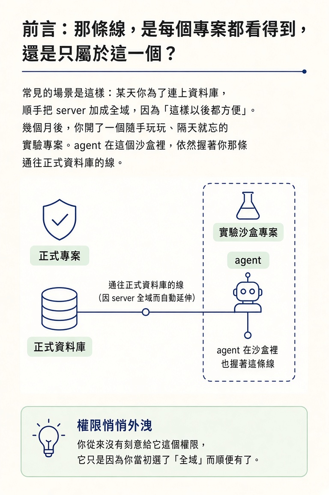
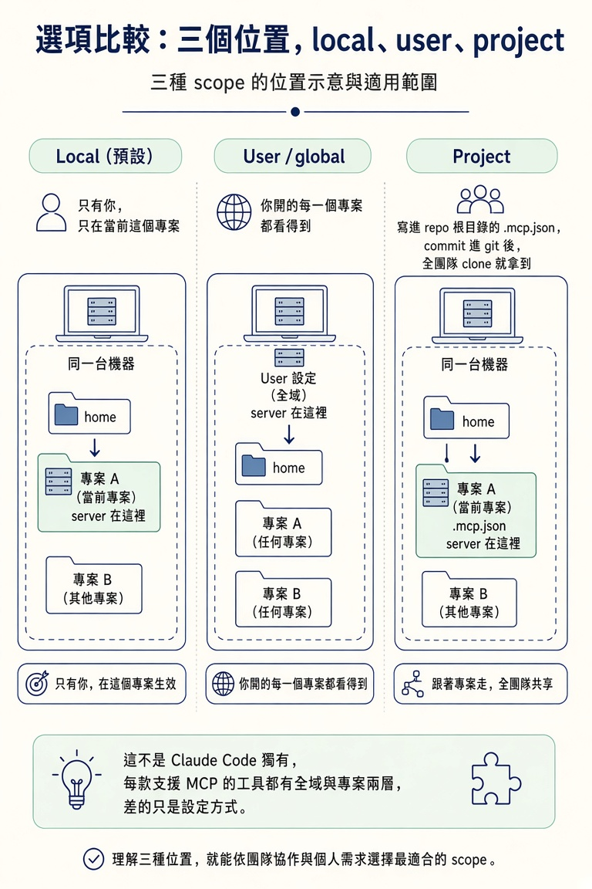
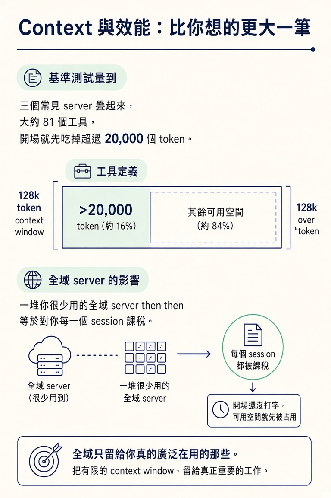

在 global（user）與 project 兩種 scope 之間做對選擇，並說出 security、context、maintainability 三個 MCP 要付的代價。
上一節你已經決定「這個服務值得接」。但還有最後一個決定，多數人直接跳過：這條線要放在哪裡。
它可以讓你往後開的每一個專案都看得到，也可以只綁在你眼前這一個專案上。這個選擇看起來枝微末節，實際上比它長得重要很多。
常見的場景是這樣：某天你為了連上資料庫，順手把 server 加成全域，因為「這樣以後都方便」。幾個月後，你開了一個隨手玩玩、隔天就忘的實驗專案。agent 在這個沙盒裡，依然握著你那條通往正式資料庫的線。你從來沒有刻意給它這個權限，它只是因為你當初選了「全域」而順便有了。

這一節要處理的就是這個位置問題。核心張力只有兩股：一邊是「到處都方便」，另一邊是「只給需要的人」。順便把接一條 MCP 要付的三筆帳算清楚。
在 Claude Code 裡，這條線有三種擺法。指令是同一個 claude mcp add，只差最後一個 --scope：
claude mcp add --transport http prisma https://mcp.prisma.io/mcp claude mcp add --transport http prisma https://mcp.prisma.io/mcp --scope user claude mcp add --transport http prisma https://mcp.prisma.io/mcp --scope project
同一道指令，只換尾巴那一個字，就決定了「誰拿得到這個 server、它住在哪」。把它們攤開比較：
| scope | 誰能用 | 適合什麼 |
|---|---|---|
| Local（預設，不給 scope 就是它） | 只有你，而且只在當前這個專案裡 | 還在試、還不確定要不要留的 server |
User / global（--scope user） | 你開的每一個專案都看得到 | 真正通用、跟專案資料無關的工具 |
Project（--scope project） | 寫進 repo 根目錄的 .mcp.json，commit 進 git 後全團隊 clone 就拿到 | 綁定某個專案系統或資料的 server |
這個「全域還是專案」的選擇不是 Claude Code 獨有的。每一款支援 MCP 的工具都有這兩層，一個套用在所有地方、一個跟著單一專案走，差的只是設定方式。

Cursor 用設定檔，全域在 ~/.cursor/mcp.json、專案在 repo 根目錄的 .cursor/mcp.json，兩邊都有時專案那份贏。Codex 用 TOML，全域在 ~/.codex/config.toml、專案在 .codex/config.toml。Copilot 則看你在哪裡用：CLI 讀 ~/.copilot/mcp-config.json，repo 層級的設定在 GitHub 的 repo 設定裡。檔名和指令會隨版本變動，實際設定時查一下那款工具目前的文件。但你做的那個決定，每一款工具都一樣。
多數人卡住的地方，是把「方便」當成了「正確」。要跳出來，問自己兩個問題就好：
這個工具是不是我在很多專案裡都用得到、而且跟任何一個專案的資料都沒關係？
還是它綁在某個特定專案的系統或資料上？
前者的答案若是「是」，它值得一個到處都有的位置。例如一個查文件用的 server、一個通用上網工具，這種東西你不管在做什麼都會想用。
後者的答案若是「是」，它就跟著專案走。指向某個專案的資料庫 server、連到某個專案帳號的服務，都屬於這一類。它綁專案有兩個理由：一是它離開這個專案本來就沒意義；二是把它 scope 在 repo 裡，隊友 clone 下來就拿到一模一樣的設定，不用每個人自己手動接一遍。
「有疑慮就 scope 到專案」這條規則，有一種情況會翻轉：當那個工具真的是你到處都在用的通用工具時。查文件、上網這一類，把它綁在單一專案裡，反而讓其他專案拿不到，你得在每個 repo 重接一次。這種東西放全域才省事。
另一個極端也一樣：如果這個 server 連的是正式資料庫、握有真實權限，那不管它「用起來多方便」，都不該因為方便而升成全域。真正會翻車的，是那個「順手加全域」的反射動作。你的直覺其實是對的：通用工具放全域，資料庫或專案專屬的 server 放專案層級。
安全是這裡最需要認真對待的考量。一個接了活跳跳權限的全域 server（尤其是資料庫或已驗證的服務），你在每一個 session、每一個專案裡都碰得到它，包括那些你隨手開起來、隔天就忘的實驗。
把一個敏感連線 scope 在唯一需要它的那個專案，可以縮小出事時會波及的範圍。另外，不管你 scope 在哪，都給 server「它真正需要的最小權限」。以資料庫來說，除非你明確需要寫入，否則優先給一個唯讀角色。
每一個連上的 server，都會在你還沒打任何字之前，先把它的工具定義載進 context。這件事累積得很快。
有一項基準測試量到：三個常見 server 疊起來、大約 81 個工具，開場就先吃掉超過 20,000 個 token。那大約是一個 128k window 的 16%，在你開始 session 之前就已經沒了。一堆你很少用的全域 server，等於對你每一個 session 課稅。所以全域要留給「你真的廣泛在用」的那些。

可維護性則是站在專案這一邊。一個 scope 在專案的 .mcp.json 會跟著 repo 走，團隊共用同一份定義，而不是每個人各自維護自己的一份。Claude Code 會在隊友第一次使用時請他確認專案 server，這道安全網值得留著。
綁定特定專案、或握有真實權限的東西，預設就用 project scope；全域只留給少數你確實想隨處使用的通用工具。有疑慮時就 scope 到專案：之後要把 server 升成全域很容易，但一個敏感的 server 悄悄地在每個地方都被碰到，卻很難被你發現。
當場能用的檢查表：
--scope user。--scope project。接不接是上一節的決定，接在哪裡是這一節的決定。Claude Code 有三個 scope：local（預設、只在當前專案、只有你）、user／global（每個專案都看得到）、project（寫進 repo 的 .mcp.json、跟團隊共享）。判準是：通用且與專案資料無關的放全域，綁特定專案系統或資料的放專案。而不管放哪，都要付三筆帳：安全（縮小波及範圍、給最小權限）、context（工具定義開場就吃掉可觀的 token）、可維護性（專案設定跟著 repo 走最省事）。有疑慮，就 scope 到專案。
到這裡，四大原語裡最貼身的兩格（tools 與 MCP）已經拆完了。你現在知道 agent 的手能碰到什麼、什麼時候該把外面的世界接進來、以及接進來之後要放在哪裡、付什麼代價。剩下兩個原語，subagents 與 skills，會在之後的節點接手：一個教你怎麼把重活丟到獨立 context 去做，一個教你怎麼讓 agent 按需求載入慣例。